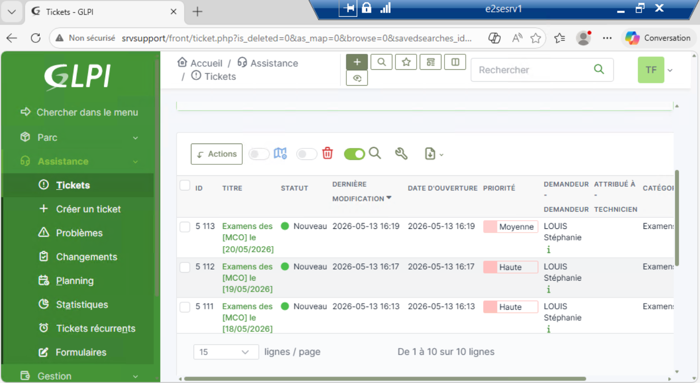

Au sein du service informatique de l'E2SE, j'assure le support de niveau 1 et niveau 2 pour l'ensemble des 2 700 utilisateurs (étudiants et collaborateurs). Les demandes arrivent via trois canaux : la plateforme GLPI, le mail du service informatique, ou directement en présentiel. Je prends en charge chaque ticket de son ouverture jusqu'à sa résolution, en assurant un suivi rigoureux et une communication claire avec l'utilisateur.
